Certifications
Junior Penetration Tester (Level 1)
Certified by TryHackMe
- Experience with Gobuster for directory and subdomain enumeration
- Completed real-world attack simulations
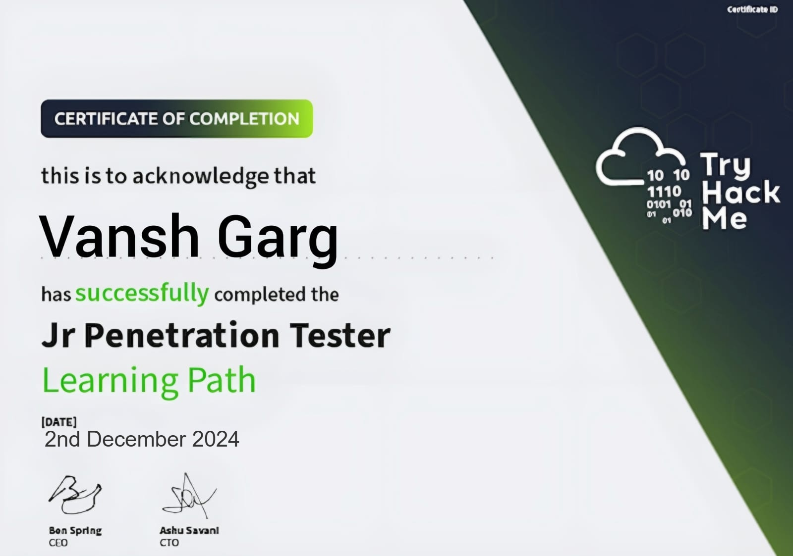
Prompt Engineering Certification
Certified by DeepLearning.AI in collaboration with OpenAI
- Hands-on experience with Prompt Optimization and Natural Language Processing
- Developed real-world prompt engineering strategies for AI-based applications
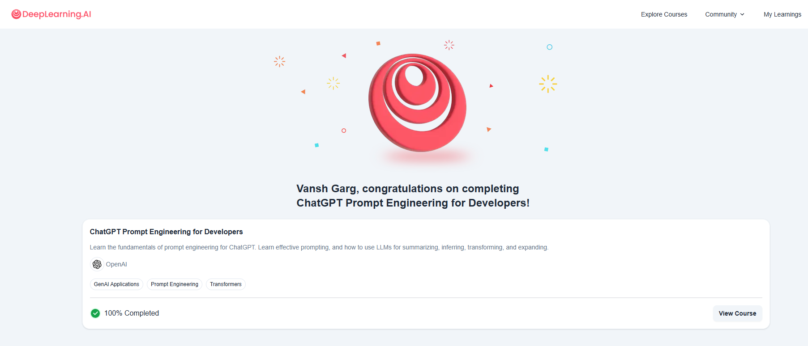
UI/UX Developer (Beginner) Certification
Certified by Great Learning Academy
- Gained knowledge in UI/UX Design Principles and Prototyping
- Learned best practices for designing user-friendly interfaces like Wireframing
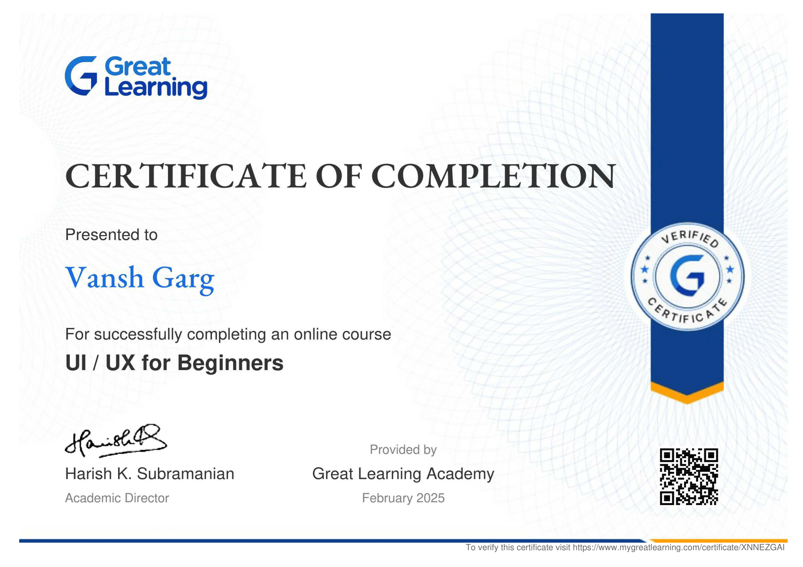
Web Designer Certification
Certified by freeCodeCamp
- Developed skills in HTML to structure modern web content
- Developed skills in CSS for styling, layout, and responsive design
- Completed 5 certification tests to earn this certificate

Introduction to Generative AI
Certified by Google Cloud
- Gained foundational knowledge of Generative AI concepts and applications
- Learned about large language models (LLMs) and responsible AI practices
- Completed an official Google Cloud introductory course

Prompt Engineering with ChatGPT
Certified by Simplilearn SkillUp
- Developed expertise in prompt engineering techniques for ChatGPT
- Learned effective prompt patterns and ways to avoid common mistakes
- Practiced advanced prompting methods for real-world applications
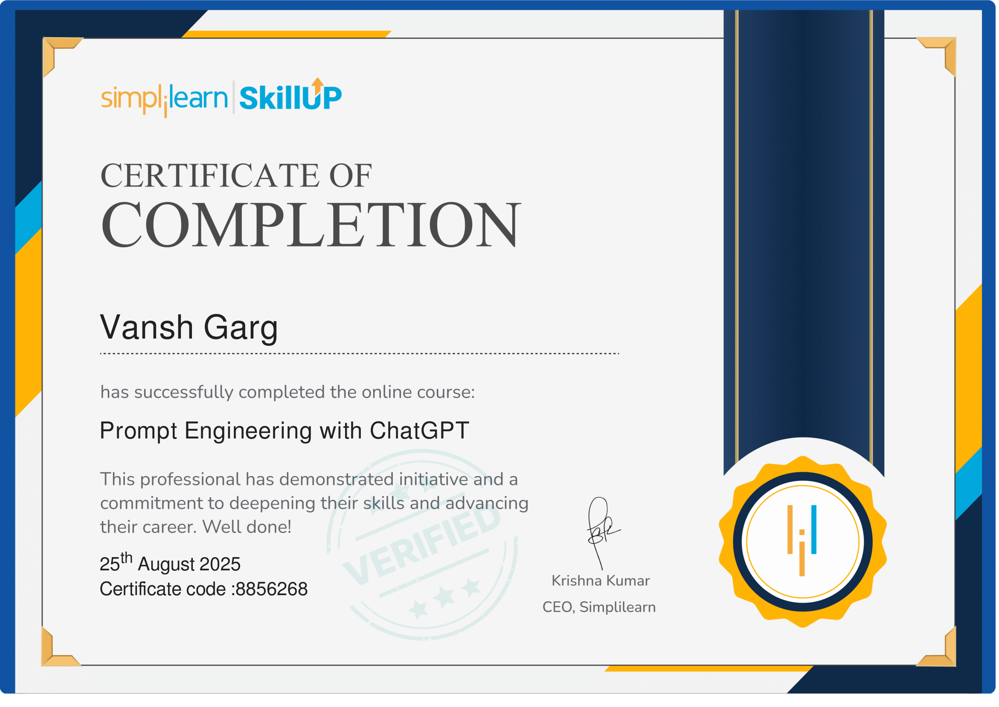
Hacktoberfest: Trick or Commit Webinar
Certified by WikiClub Tech, United University, Prayagraj
- Successfully participated in the Hacktoberfest: Trick or Commit webinar
- Recognized for dedication to open-source initiatives and community collaboration
- Appreciated for expanding knowledge and embodying the spirit of Hacktoberfest
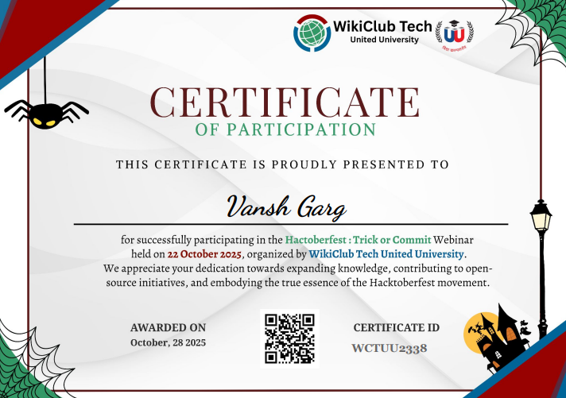
C Programming Basics Certification
Certified by Simplilearn SkillUp
- Successfully completed the C Programming Basics course
- Gained strong understanding of variables, loops, conditionals, and functions
- Built foundational knowledge in problem-solving and programming logic
- Demonstrated commitment to continuous learning and skill development
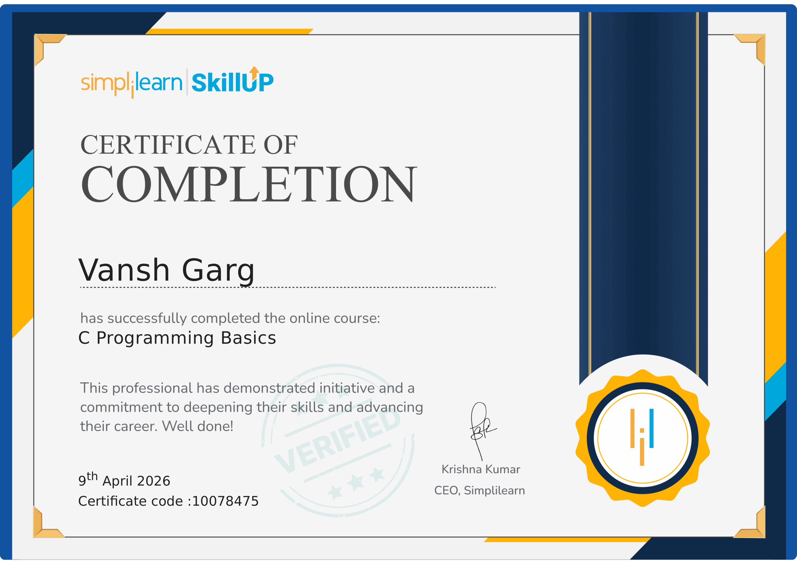
AI and Cybersecurity Awareness Certification
Certified by TCS iON under the AI for All Initiative
- Successfully completed the AI and Cybersecurity Awareness course
- Gained understanding of Artificial Intelligence fundamentals and real-world applications
- Learned key concepts of cybersecurity, online safety, and threat awareness
- Explored responsible and ethical use of AI technologies
- Completed under MPIT – CoE in partnership with TCS Foundation

Generative AI Essentials Certification
Certified by TCS iON under the AI for All Initiative
- Successfully completed the Generative AI Essentials course
- Gained understanding of Generative AI concepts and real-world applications
- Learned how AI models generate text, images, and content
- Explored ethical and responsible use of AI technologies
- Completed under MPIT – CoE in partnership with TCS Foundation
- Issued in April 2026
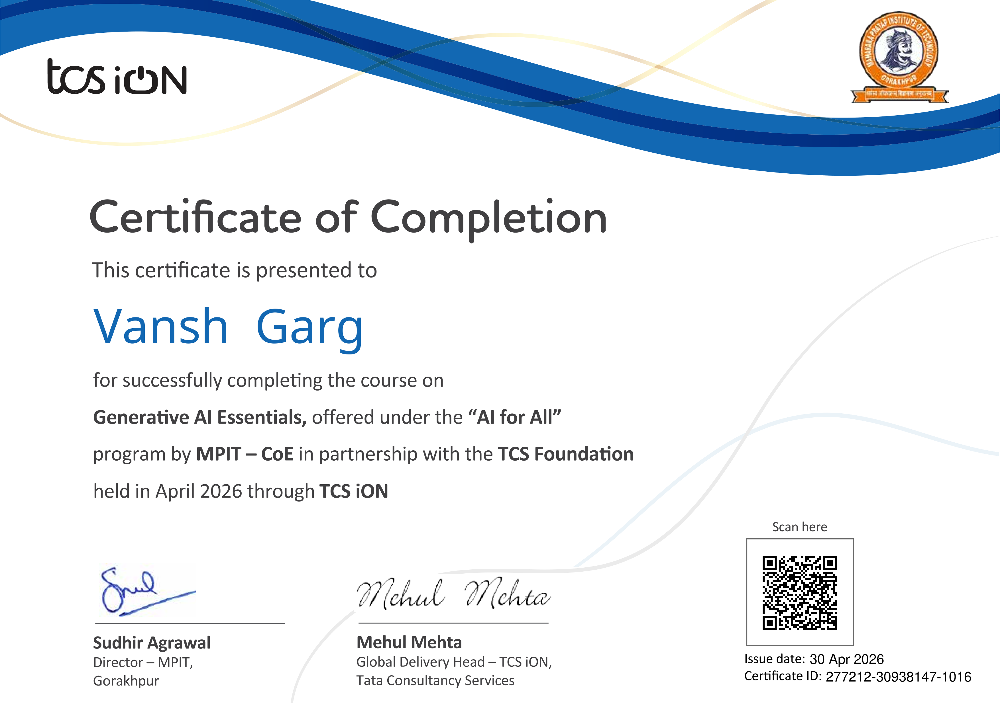
Claude 101 Certification
Certified by Anthropic
- Successfully completed the Claude 101 course
- Learned the fundamentals of Claude AI and modern AI workflows
- Explored practical use cases of Generative AI for productivity and development
- Gained understanding of AI-assisted problem solving and prompt engineering
- Studied responsible and effective usage of AI technologies
- Issued in May 2026
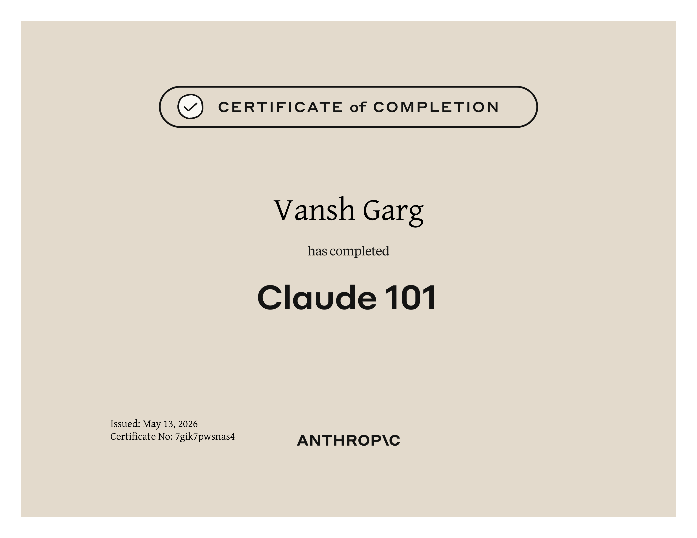
AI Tools & ChatGPT Workshop Certification
Certified by be10x
- Successfully completed the AI Tools & ChatGPT Workshop
- Learned how to use AI tools for productivity and workflow automation
- Explored practical applications of ChatGPT and Generative AI
- Gained experience in AI-assisted coding and debugging
- Learned AI-powered techniques for presentations and data analysis
- Developed understanding of modern AI workflows and smart productivity systems
- Issued on May 17, 2026
Diploma in Prompt Engineering & AI Workflows
Self-directed diploma studies and practical AI learning inspired by educational resources from Alison
- Completed an independent diploma-style study program focused on Prompt Engineering and Generative AI
- Explored advanced applications of ChatGPT, AI tools, and intelligent automation systems
- Developed hands-on experience in AI-assisted coding, debugging, and workflow optimization
- Studied modern techniques for effective prompting, AI communication, and productivity enhancement
- Applied concepts through practical experimentation and real-world AI usage
- Built understanding of LLM-based workflows and AI-powered creative systems
- Self-completed and documented in May 2026
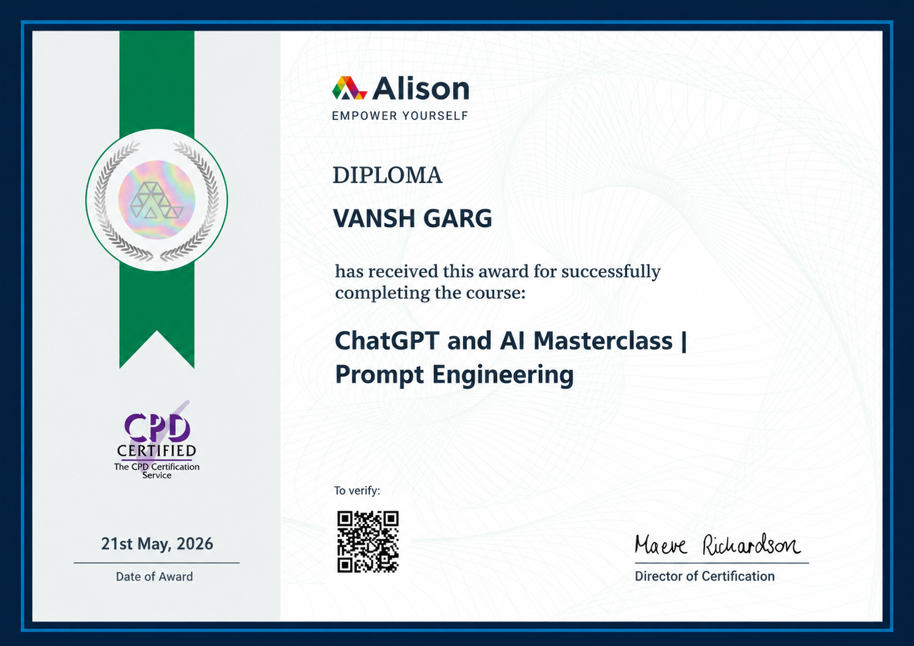
Learning from IITian-Led Workshops (Be10x AI & ChatGPT Workshop — Revisited)
Certified by be10x
- Successfully completed the AI Tools & ChatGPT Workshop
- Studied how IITian-led workshops use presentation strategy and audience engagement
- Learned practical usage of AI tools for productivity and workflow automation
- Explored real-world applications of ChatGPT and Generative AI systems
- Gained experience in AI-assisted coding, debugging, and smart workflows
- Analyzed modern techniques used in educational marketing and course promotion
- Learned AI-powered methods for presentations, research, and data analysis
- Developed understanding of branding, communication, and conversion psychology
- Issued on May 24, 2026
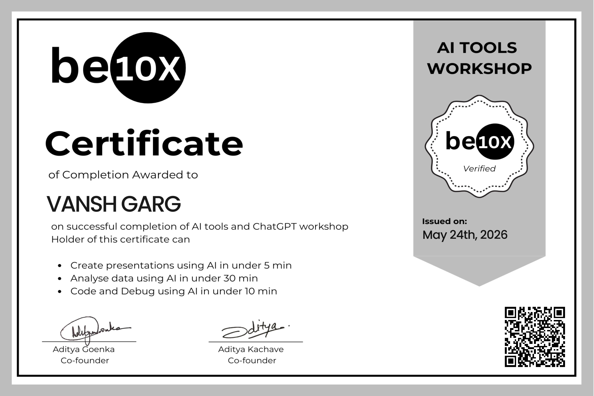
Python Basic Assessment Certification
Certified by LearnTube.ai
- Successfully completed the Python Basic Assessment
- Demonstrated understanding of Python fundamentals and programming concepts
- Applied knowledge of variables, data types, operators, and control flow
- Worked with functions, loops, and conditional statements
- Strengthened problem-solving skills through Python-based challenges
- Validated foundational programming knowledge with a verified assessment certificate
- Issued on May 30, 2026
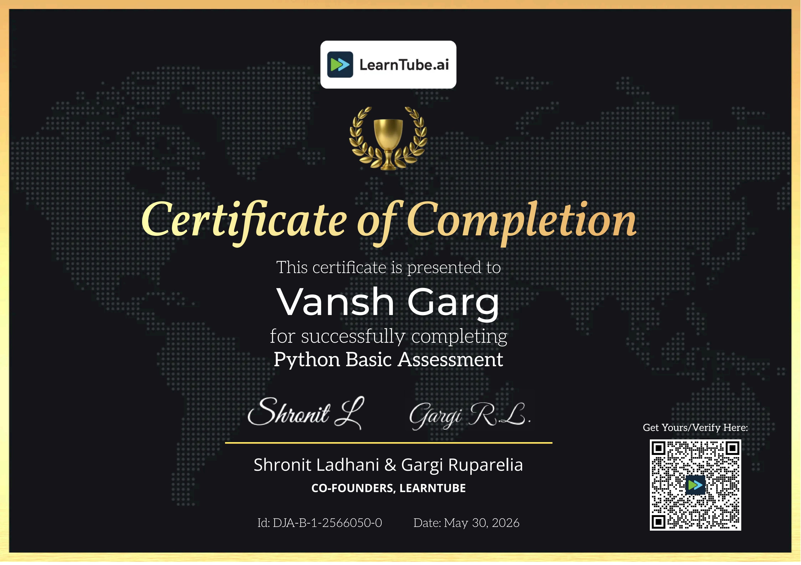